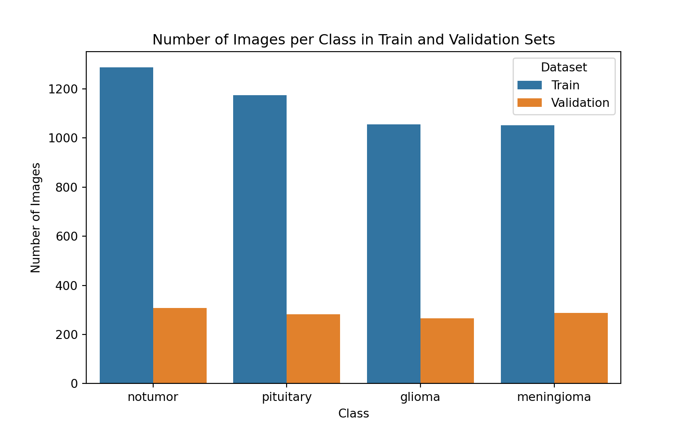
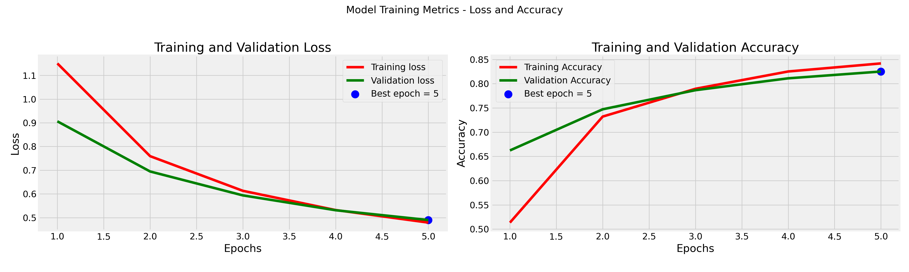
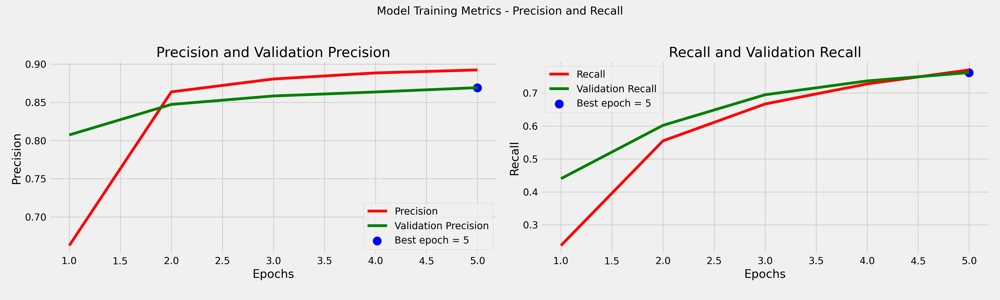
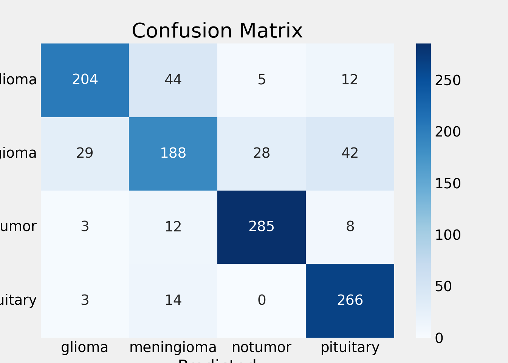
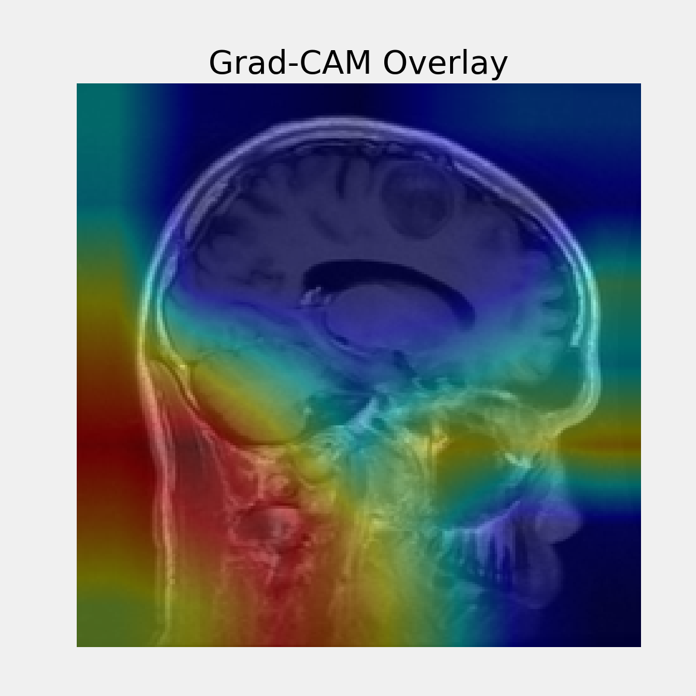
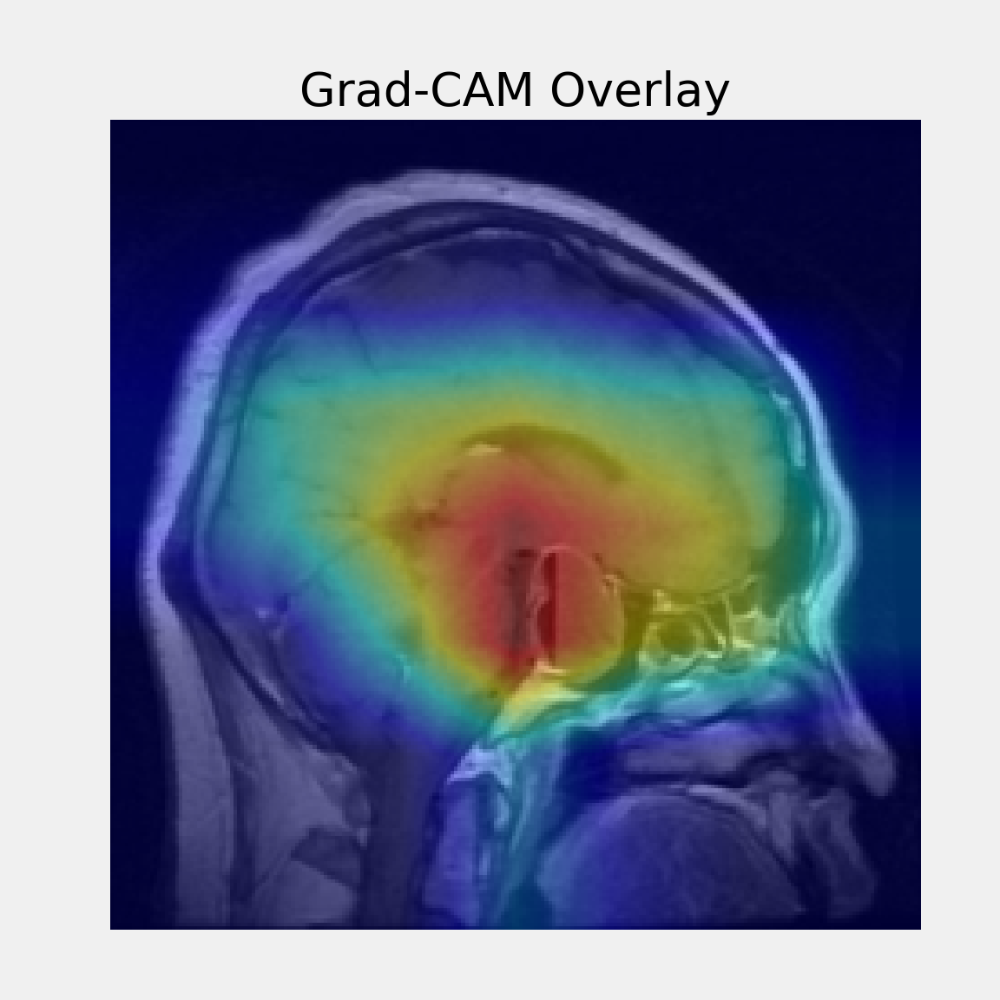
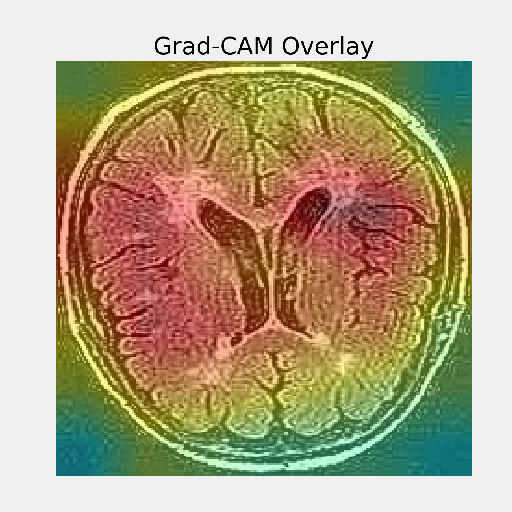

Code
reticulate::use_python("/Users/nathanbresette/Documents/Portfolio/.venv/bin/python", required = TRUE)
reticulate::py_config()Nathan Bresette
July 7, 2025
Medical imaging plays a critical role in diagnosing and managing brain tumors, which vary widely in type and severity. Automating tumor classification using neural networks can support radiologists by providing faster, consistent, and potentially more accurate assessments. This project aims to learn how to classify brain tumor MRI images into four categories—glioma, meningioma, pituitary tumors, and no tumor by using convolutional neural networks (CNNs). Specifically, I leveraged transfer learning with the lightweight MobileNetV2 architecture, pretrained on ImageNet, to adapt it to the medical imaging domain. Through this project, the goals include gaining practical experience in medical image classification, preprocessing real-world MRI datasets, and evaluating model performance using various metrics and visualization techniques such as Grad-CAM.
Meningioma:
Tumors arising from the meninges (protective membranes covering brain/spinal cord). Usually benign and slow-growing but may cause pressure effects depending on size/location.
Pituitary Tumors:
Tumors in the pituitary gland (hormone control center at brain base). Usually benign but can alter hormone production, causing various symptoms.
Glioma:
Tumors originating from glial cells (which support neurons). Tend to be more aggressive and malignant (e.g., astrocytomas, glioblastomas).
reticulate::use_python("/Users/nathanbresette/Documents/Portfolio/.venv/bin/python", required = TRUE)
reticulate::py_config()import os
import numpy as np
import matplotlib.pyplot as plt
import tensorflow as tf
from tensorflow.keras.preprocessing.image import ImageDataGenerator
from tensorflow.keras.applications import MobileNetV2
from tensorflow.keras.models import Model
from tensorflow.keras.layers import Dense, GlobalAveragePooling2D
from tensorflow.keras.optimizers import Adam
from tensorflow.keras.metrics import Precision, Recall
from sklearn.metrics import classification_report, confusion_matrix
import seaborn as sns
import pandas as pd
import random
from PIL import Image
import matplotlib.pyplot as plt
import visualkerasfrom kaggle.api.kaggle_api_extended import KaggleApi
OUTPUT_DIR = "brain_tumor_classification/data/raw/kaggle_brain_tumor"
os.makedirs(OUTPUT_DIR, exist_ok=True)
def download():
api = KaggleApi()
api.authenticate()
dataset = "masoudnickparvar/brain-tumor-mri-dataset"
api.dataset_download_files(dataset, path=OUTPUT_DIR, unzip=True)
print("Dataset downloaded and extracted.")
if __name__ == "__main__":
download()Dataset URL: https://www.kaggle.com/datasets/masoudnickparvar/brain-tumor-mri-dataset
Dataset downloaded and extracted.Resize images to 224x224 (MobileNetV2 standard)
Normalize pixel intensities later in data generator
Split into train (80%), validation (20%), test sets
Save file paths and labels as CSVs for efficient loading
RAW_DIR = "brain_tumor_classification/data/raw/kaggle_brain_tumor"
PROC_DIR = "brain_tumor_classification/data/processed/kaggle_brain_tumor"
IMG_SIZE = (224, 224)
SEED = 42
random.seed(SEED)
def preprocess():
train_dir = os.path.join(RAW_DIR, "Training")
test_dir = os.path.join(RAW_DIR, "Testing")
classes = ["glioma", "meningioma", "notumor", "pituitary"]
# Create output dirs
for split in ["train", "val", "test"]:
for cls in classes:
os.makedirs(os.path.join(PROC_DIR, split, cls), exist_ok=True)
# Load train+val images
train_val_images = []
for cls in classes:
cls_path = os.path.join(train_dir, cls)
for img_name in os.listdir(cls_path):
train_val_images.append((os.path.join(cls_path, img_name), cls))
random.shuffle(train_val_images)
n = len(train_val_images)
train_cutoff = int(0.8 * n) # 80% train, 20% val
train_images = train_val_images[:train_cutoff]
val_images = train_val_images[train_cutoff:]
# Load test images
test_images = []
for cls in classes:
cls_path = os.path.join(test_dir, cls)
for img_name in os.listdir(cls_path):
test_images.append((os.path.join(cls_path, img_name), cls))
def save_split(images, split_name):
records = []
for i, (src_path, label) in enumerate(images):
img = Image.open(src_path).convert("RGB")
img = img.resize(IMG_SIZE)
filename = f"{label}_{i:05d}.png"
out_path = os.path.join(PROC_DIR, split_name, label, filename)
img.save(out_path)
records.append({"filepath": out_path, "label": label})
df = pd.DataFrame(records)
df.to_csv(os.path.join(PROC_DIR, f"{split_name}_labels.csv"), index=False)
save_split(train_images, "train")
save_split(val_images, "val")
save_split(test_images, "test")
print("Preprocessing complete!")
if __name__ == "__main__":
preprocess()Preprocessing complete!PROC_DIR = "brain_tumor_classification/data/processed/kaggle_brain_tumor"
IMG_SIZE = (224, 224)
BATCH_SIZE = 32
train_df = pd.read_csv(os.path.join(PROC_DIR, "train_labels.csv"))
val_df = pd.read_csv(os.path.join(PROC_DIR, "val_labels.csv"))
label_map = {label: idx for idx, label in enumerate(sorted(train_df['label'].unique()))}
train_df["class"] = train_df["label"].map(label_map)
val_df["class"] = val_df["label"].map(label_map)
datagen = ImageDataGenerator(rescale=1./255)
train_gen = datagen.flow_from_dataframe(
train_df,
x_col="filepath",
y_col="label",
target_size=IMG_SIZE,
class_mode="categorical",
batch_size=BATCH_SIZE,
shuffle=True,
seed=42
)Found 4569 validated image filenames belonging to 4 classes.Found 1143 validated image filenames belonging to 4 classes.Distribution of our four classes which are relatively very balanced
train_counts = train_df['label'].value_counts().reset_index()
train_counts.columns = ['Class', 'Count']
train_counts['Dataset'] = 'Train'
val_counts = val_df['label'].value_counts().reset_index()
val_counts.columns = ['Class', 'Count']
val_counts['Dataset'] = 'Validation'
counts_df = pd.concat([train_counts, val_counts])
print("Image counts per class:")Image counts per class:Dataset Train Validation
Class
glioma 1056 265
meningioma 1052 287
notumor 1287 308
pituitary 1174 283
I chose to go with MobileNetV2 since it’s a lightweight, efficient CNN pretrained on ImageNet. This makes it ideal for transfer learning on smaller medical image datasets.
Input Shape (224, 224, 3): This matches MobileNetV2’s expected input dimensions, enabling reuse of its pretrained weights without modification.
Learning Rate (0.0001): A low learning rate ensures stable fine-tuning and prevents large gradient updates, which is important when using a pretrained base.
base_model = MobileNetV2(include_top=False, weights="imagenet", input_shape=(224, 224, 3))
base_model.trainable = False
x = GlobalAveragePooling2D()(base_model.output)
output = Dense(len(label_map), activation="softmax")(x)
model = Model(inputs=base_model.input, outputs=output)
model.compile(
optimizer=Adam(learning_rate=0.0001),
loss="categorical_crossentropy",
metrics=["accuracy", Precision(name="precision"), Recall(name="recall")]
)This is the MobileNetV2 architecture!
tr_acc = history.history['accuracy']
tr_loss = history.history['loss']
tr_per = history.history['precision']
tr_recall = history.history['recall']
val_acc = history.history['val_accuracy']
val_loss = history.history['val_loss']
val_per = history.history['val_precision']
val_recall = history.history['val_recall']
index_loss = np.argmin(val_loss)
val_lowest = val_loss[index_loss]
index_acc = np.argmax(val_acc)
acc_highest = val_acc[index_acc]
index_precision = np.argmax(val_per)
per_highest = val_per[index_precision]
index_recall = np.argmax(val_recall)
recall_highest = val_recall[index_recall]
Epochs = [i + 1 for i in range(len(tr_acc))]
loss_label = f'Best epoch = {str(index_loss + 1)}'
acc_label = f'Best epoch = {str(index_acc + 1)}'
per_label = f'Best epoch = {str(index_precision + 1)}'
recall_label = f'Best epoch = {str(index_recall + 1)}'
plt.figure(figsize=(20, 6))
plt.style.use('fivethirtyeight')
plt.subplot(1, 2, 1)
plt.plot(Epochs, tr_loss, 'r', label='Training loss')
plt.plot(Epochs, val_loss, 'g', label='Validation loss')
plt.scatter(index_loss + 1, val_lowest, s=150, c='blue', label=loss_label)
plt.title('Training and Validation Loss')
plt.xlabel('Epochs')
plt.ylabel('Loss')
plt.legend()
plt.grid(True)
plt.subplot(1, 2, 2)
plt.plot(Epochs, tr_acc, 'r', label='Training Accuracy')
plt.plot(Epochs, val_acc, 'g', label='Validation Accuracy')
plt.scatter(index_acc + 1, acc_highest, s=150, c='blue', label=acc_label)
plt.title('Training and Validation Accuracy')
plt.xlabel('Epochs')
plt.ylabel('Accuracy')
plt.legend()
plt.grid(True)
plt.suptitle('Model Training Metrics - Loss and Accuracy', fontsize=16)
plt.tight_layout(rect=[0, 0.03, 1, 0.95])
plt.show()
Loss consistently decreases over the 5 epochs for both training and validation.the model is learning effectively and not overfitting in the short term.
Validation accuracy lags slightly behind training accuracy but follows a similar trend, with the best performance reached at epoch 5.
plt.figure(figsize=(20, 6))
plt.subplot(1, 2, 1)
plt.plot(Epochs, tr_per, 'r', label='Precision')
plt.plot(Epochs, val_per, 'g', label='Validation Precision')
plt.scatter(index_precision + 1, per_highest, s=150, c='blue', label=per_label)
plt.title('Precision and Validation Precision')
plt.xlabel('Epochs')
plt.ylabel('Precision')
plt.legend()
plt.grid(True)
plt.subplot(1, 2, 2)
plt.plot(Epochs, tr_recall, 'r', label='Recall')
plt.plot(Epochs, val_recall, 'g', label='Validation Recall')
plt.scatter(index_recall + 1, recall_highest, s=150, c='blue', label=recall_label)
plt.title('Recall and Validation Recall')
plt.xlabel('Epochs')
plt.ylabel('Recall')
plt.legend()
plt.grid(True)
plt.suptitle('Model Training Metrics - Precision and Recall', fontsize=16)
plt.tight_layout(rect=[0, 0.03, 1, 0.95])
plt.show()
Precision steadily improves for both training and validation, with training precision slightly higher than validation, so the model generalizes well but still performs better on the training data.
Recall also increases consistently, with validation recall slightly higher than training recall in early epochs. This suggests the model became more sensitive to true positives over time, and maintained good generalization.
Epoch 5 is marked as the best based on all metrics. More epochs could potentially further improve performance, but my Mac is quite slow already.
[1m 1/36[0m [37m━━━━━━━━━━━━━━━━━━━━[0m [1m32s[0m 931ms/step
[1m 2/36[0m [32m━[0m[37m━━━━━━━━━━━━━━━━━━━[0m [1m10s[0m 300ms/step
[1m 3/36[0m [32m━[0m[37m━━━━━━━━━━━━━━━━━━━[0m [1m9s[0m 294ms/step
[1m 4/36[0m [32m━━[0m[37m━━━━━━━━━━━━━━━━━━[0m [1m9s[0m 288ms/step
[1m 5/36[0m [32m━━[0m[37m━━━━━━━━━━━━━━━━━━[0m [1m8s[0m 289ms/step
[1m 6/36[0m [32m━━━[0m[37m━━━━━━━━━━━━━━━━━[0m [1m8s[0m 287ms/step
[1m 7/36[0m [32m━━━[0m[37m━━━━━━━━━━━━━━━━━[0m [1m8s[0m 286ms/step
[1m 8/36[0m [32m━━━━[0m[37m━━━━━━━━━━━━━━━━[0m [1m7s[0m 285ms/step
[1m 9/36[0m [32m━━━━━[0m[37m━━━━━━━━━━━━━━━[0m [1m7s[0m 284ms/step
[1m10/36[0m [32m━━━━━[0m[37m━━━━━━━━━━━━━━━[0m [1m7s[0m 282ms/step
[1m11/36[0m [32m━━━━━━[0m[37m━━━━━━━━━━━━━━[0m [1m7s[0m 281ms/step
[1m12/36[0m [32m━━━━━━[0m[37m━━━━━━━━━━━━━━[0m [1m6s[0m 280ms/step
[1m13/36[0m [32m━━━━━━━[0m[37m━━━━━━━━━━━━━[0m [1m6s[0m 279ms/step
[1m14/36[0m [32m━━━━━━━[0m[37m━━━━━━━━━━━━━[0m [1m6s[0m 278ms/step
[1m15/36[0m [32m━━━━━━━━[0m[37m━━━━━━━━━━━━[0m [1m5s[0m 278ms/step
[1m16/36[0m [32m━━━━━━━━[0m[37m━━━━━━━━━━━━[0m [1m5s[0m 277ms/step
[1m17/36[0m [32m━━━━━━━━━[0m[37m━━━━━━━━━━━[0m [1m5s[0m 276ms/step
[1m18/36[0m [32m━━━━━━━━━━[0m[37m━━━━━━━━━━[0m [1m4s[0m 276ms/step
[1m19/36[0m [32m━━━━━━━━━━[0m[37m━━━━━━━━━━[0m [1m4s[0m 275ms/step
[1m20/36[0m [32m━━━━━━━━━━━[0m[37m━━━━━━━━━[0m [1m4s[0m 275ms/step
[1m21/36[0m [32m━━━━━━━━━━━[0m[37m━━━━━━━━━[0m [1m4s[0m 275ms/step
[1m22/36[0m [32m━━━━━━━━━━━━[0m[37m━━━━━━━━[0m [1m3s[0m 275ms/step
[1m23/36[0m [32m━━━━━━━━━━━━[0m[37m━━━━━━━━[0m [1m3s[0m 275ms/step
[1m24/36[0m [32m━━━━━━━━━━━━━[0m[37m━━━━━━━[0m [1m3s[0m 275ms/step
[1m25/36[0m [32m━━━━━━━━━━━━━[0m[37m━━━━━━━[0m [1m3s[0m 275ms/step
[1m26/36[0m [32m━━━━━━━━━━━━━━[0m[37m━━━━━━[0m [1m2s[0m 275ms/step
[1m27/36[0m [32m━━━━━━━━━━━━━━━[0m[37m━━━━━[0m [1m2s[0m 275ms/step
[1m28/36[0m [32m━━━━━━━━━━━━━━━[0m[37m━━━━━[0m [1m2s[0m 275ms/step
[1m29/36[0m [32m━━━━━━━━━━━━━━━━[0m[37m━━━━[0m [1m1s[0m 275ms/step
[1m30/36[0m [32m━━━━━━━━━━━━━━━━[0m[37m━━━━[0m [1m1s[0m 276ms/step
[1m31/36[0m [32m━━━━━━━━━━━━━━━━━[0m[37m━━━[0m [1m1s[0m 278ms/step
[1m32/36[0m [32m━━━━━━━━━━━━━━━━━[0m[37m━━━[0m [1m1s[0m 279ms/step
[1m33/36[0m [32m━━━━━━━━━━━━━━━━━━[0m[37m━━[0m [1m0s[0m 280ms/step
[1m34/36[0m [32m━━━━━━━━━━━━━━━━━━[0m[37m━━[0m [1m0s[0m 280ms/step
[1m35/36[0m [32m━━━━━━━━━━━━━━━━━━━[0m[37m━[0m [1m0s[0m 280ms/step
[1m36/36[0m [32m━━━━━━━━━━━━━━━━━━━━[0m[37m[0m [1m0s[0m 290ms/step
[1m36/36[0m [32m━━━━━━━━━━━━━━━━━━━━[0m[37m[0m [1m11s[0m 290ms/step precision recall f1-score support
glioma 0.85 0.77 0.81 265
meningioma 0.73 0.66 0.69 287
notumor 0.90 0.93 0.91 308
pituitary 0.81 0.94 0.87 283
accuracy 0.83 1143
macro avg 0.82 0.82 0.82 1143
weighted avg 0.82 0.83 0.82 1143
Best performance was on “notumor” and “pituitary” classes, with F1-scores of 0.91 and 0.88 respectively.
“Meningioma” was the most challenging class, with the lowest recall (0.61), so many meningioma images were misclassified.
Overall model accuracy is 83%, with balanced precision and recall across most classes. It showed generally strong performance but room for improvement in class-specific sensitivity.
This function generates Grad-CAM heatmaps for several images in a batch, showing where the model is focusing when making predictions. It displays both the true and predicted class for each image, helping interpret model behavior visually.
In Grad-CAM: - Brighter (hotter) colors = more important - Darker (cooler) colors = less important
import cv2
def make_gradcam_heatmap(img_array, model, last_conv_layer_name, pred_index=None):
grad_model = tf.keras.models.Model(
inputs=model.input,
outputs=[model.get_layer(last_conv_layer_name).output, model.output]
)
with tf.GradientTape() as tape:
conv_outputs, predictions = grad_model(img_array)
if pred_index is None:
pred_index = tf.argmax(predictions[0])
class_channel = predictions[:, pred_index]
grads = tape.gradient(class_channel, conv_outputs)
pooled_grads = tf.reduce_mean(grads, axis=(0, 1, 2))
conv_outputs = conv_outputs[0]
heatmap = conv_outputs @ pooled_grads[..., tf.newaxis]
heatmap = tf.squeeze(heatmap)
heatmap = np.maximum(heatmap, 0) / tf.math.reduce_max(heatmap)
return heatmap.numpy()
def display_gradcam(img, heatmap, alpha=0.4):
# Resize heatmap to match image size
heatmap = cv2.resize(heatmap, (img.shape[1], img.shape[0]))
heatmap = np.uint8(255 * heatmap)
# Apply colormap (you can change COLORMAP_JET to any OpenCV colormap)
heatmap_color = cv2.applyColorMap(heatmap, cv2.COLORMAP_JET)
# Convert image to BGR for OpenCV overlay
img_bgr = np.uint8(255 * img)
if img_bgr.shape[-1] == 1:
img_bgr = cv2.cvtColor(img_bgr, cv2.COLOR_GRAY2BGR)
# Overlay heatmap on image
overlayed_img = cv2.addWeighted(img_bgr, 1 - alpha, heatmap_color, alpha, 0)
# Convert back to RGB for matplotlib
overlayed_img = cv2.cvtColor(overlayed_img, cv2.COLOR_BGR2RGB)
# Show
plt.figure(figsize=(6, 6))
plt.imshow(overlayed_img)
plt.axis("off")
plt.title("Grad-CAM Overlay")
plt.show()
def gradcam_on_batch(generator, model, last_conv_layer_name="Conv_1", num_images=5):
images, labels = next(generator)
class_names = list(generator.class_indices.keys())
displayed = 0
for i in range(len(images)):
if displayed >= num_images:
break
img = images[i]
label_idx = np.argmax(labels[i])
true_label = class_names[label_idx]
img_exp = np.expand_dims(img, axis=0)
preds = model.predict(img_exp)
pred_idx = np.argmax(preds[0])
pred_label = class_names[pred_idx]
if pred_label == true_label:
heatmap = make_gradcam_heatmap(img_exp, model, last_conv_layer_name)
print(f"Image {i+1}: True = {true_label}, Predicted = {pred_label} (Correct)")
display_gradcam(img, heatmap)
displayed += 1
gradcam_on_batch(val_gen, model, last_conv_layer_name="Conv_1", num_images=3)
[1m1/1[0m [32m━━━━━━━━━━━━━━━━━━━━[0m[37m[0m [1m0s[0m 450ms/step
[1m1/1[0m [32m━━━━━━━━━━━━━━━━━━━━[0m[37m[0m [1m0s[0m 460ms/step
Image 1: True = glioma, Predicted = glioma (Correct)
[1m1/1[0m [32m━━━━━━━━━━━━━━━━━━━━[0m[37m[0m [1m0s[0m 25ms/step
[1m1/1[0m [32m━━━━━━━━━━━━━━━━━━━━[0m[37m[0m [1m0s[0m 34ms/step
Image 2: True = pituitary, Predicted = pituitary (Correct)
[1m1/1[0m [32m━━━━━━━━━━━━━━━━━━━━[0m[37m[0m [1m0s[0m 25ms/step
[1m1/1[0m [32m━━━━━━━━━━━━━━━━━━━━[0m[37m[0m [1m0s[0m 34ms/step
[1m1/1[0m [32m━━━━━━━━━━━━━━━━━━━━[0m[37m[0m [1m0s[0m 24ms/step
[1m1/1[0m [32m━━━━━━━━━━━━━━━━━━━━[0m[37m[0m [1m0s[0m 33ms/step
Image 4: True = notumor, Predicted = notumor (Correct)


Why the area differs in each image: - Model focuses on features it finds most discriminative, which vary by image. - Differences in predictions, confidence, or tumor appearance shift attention. - Grad-CAM uses low-res feature maps, making heatmaps coarse and inconsistent.
The MobileNetV2-based model achieved an overall classification accuracy of approximately 83% on the validation set. It demonstrated promising performance for this multi-class brain tumor classification task with limited computing power. The model showed strong precision and recall for “no tumor” and “pituitary tumor” classes. However, the “meningioma” class proved more challenging, with the lowest recall score, suggesting room for improvement in identifying this tumor type.
Visualization tools such as Grad-CAM provided useful interpretability, highlighting the regions of MRI scans the model focuses on during classification. This aligns with the goal of developing more transparent and explainable AI models in medical imaging.
Overall, the project validated the feasibility of transfer learning for brain tumor classification and highlighted the importance of dataset balancing, preprocessing, and careful evaluation in medical image analysis. It was a great learning project